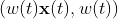
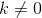
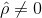

Racionalna Bézierova krivulja stupnja u je projekcija Bézierove krivulje stupnja u na hiperravninu . Točke u su oblika .
Točki odgovara točka .
Točka je projekcija točke  koja leži na neracionalnoj 4D Bézierovoj krivulji stupnja .
Točke određuju kontrolni poligon koji je projekcija kontrolnog poligona pripadne neracionalne 4D Bézierove krivulje određenog točkama .
Ako je , tada dobivamo neracionalnu Bézierovu krivulju.
Ako su sve težine pozitivne, tada nema singulariteta i krivulja je sadržana u konveksnoj ljusci svojeg kontrolnog poligona.
Za  težine daju istu krivulju kao i početne težine .
Graf krivulje se ne mijenja pri zamjeni težina za neki .
Ako uzmemo (uz uvjet ), nakon dijeljenja s dolazimo do standardne forme racionalne Bézierove krivulje u kojoj je
Podignemo stupanj pripadne neracionalne Bézierove krivulje s kontrolnim točkama i nakon toga dobivene točke projiciramo na hiperravninu .
postupak 1 Uzmemo racionalnu Bézierovu krivulju u standardnoj formi i podignemo njezin stupanj. postupak 2 Uzmemo racionalnu Bézierovu krivulju u standardnoj formi, najprije ju reparametriziramo, nakon toga joj podignemo stupanj i dobivenu krivulju dovedemo u standardnu formu. Opisana dva postupka daju dva različita kontrolna poligona i dva različita skupa standardiziranih težina koji opisuju istu racionalnu krivulju.
 u je projekcija Bézierove krivulje stupnja
u je projekcija Bézierove krivulje stupnja  . Točke u su oblika .
. Točke u su oblika .